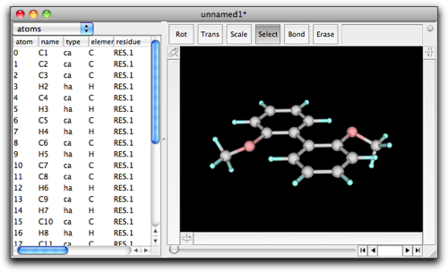
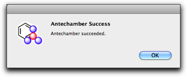
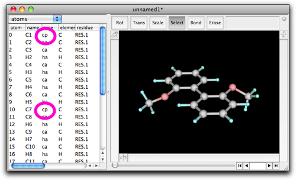
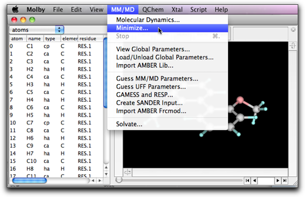

Step Six: Energy Minimization by Molecular Mechanics
1. About Molecular Mechanics Implementation in Molby
The molecular models built by hand generally include unnatural bond lengths, bond angles, van der Waals contacts, and so on. Molecular mechanics is a useful technique to remove such unnatural structures.
Molby implements molecular mechanics calculation by use of basic force fields, including bond stretching, angle bending, dihedral rotation, improper torsions, van der Waals interaction, and electrostatic interaction. With the exception of the electrostatic interaction, the parameters are taken from the predefined table by looking up the "atom types" assigned to the atoms.
By default, Molby uses gaff parameter set. Gaff, "General AMBER Force Field", is a part of AMBER molecular dynamics package; the force field parameters are made public domain by courtesy of the AMBER developers. Molby also includes parm99 parameter set, another AMBER force field that is widely used for biomolecules.
The troublesome part in using force fields is how to assign atom types. The AMBER developers provides a useful set of programs to take care of this problem. Thanks again to the AMBER developers, these programs, named AmberTools, are now made public (open source under GPLv2). Molby includes some of these programs, and calls and imports the results.
Following are the original papers published by the AMBER team. Please be sure to refer to them in your publication when you use the AMBER parameters or AmberTools.
- Wang, J.; Wolf, R.M.; Caldwell, J.W.; Kollamn, P.A.; Case, D.A. Development and testing of a general Amber force field. J. Comput. Chem., 2004, 25, 1157–1174.
- Wang, B.; Merz, K.M. Jr. A fast QM/MM (quantum mechanical/molecular mechanical) approach to calculate nuclear magnetic resonance chemical shifts for macromolecules. J. Chem. Theory Comput., 2006, 2, 209–215.
2. Energy Minimization How-to
Now we try energy minimization. We use 2,2'-dimethoxybiphenyl as an example.
 2,2'-dimethoxybiphenyl
2,2'-dimethoxybiphenyl
Build this molecule. The easiest way is, (1) double-click the empty editing area and type "C6H5C6H5", (2) select one ortho hydrogen, double-click, and type "OCH3", (3) repeat (2) for another ortho hydrogen on the other ring.

Open the "MM/MD" menu, and select "Guess MM/MD Parameters..." command.

A dialog like below shows up. This is for execution of Antechamber on the current molecule. Turn off the "Calculate partial charges" checkbox, and turn on the "Guess atom types" checkbox. The "log" directory is used by AmberTools for storing intermediate files; the default value would be acceptable, but you can change it here.

After pressing "OK", two dialog boxes appear in turn. They disappear so quickly that you may not recognize what they are saying; actually, the first one says "Running antechamber" and the second one "Running parmchk." These are programs included in AmberTools. In the present case, both programs complete successfully, and the following dialog appears.

Press "OK", and you will return to the molecule window. Do you notice what change has been made? It is the atom types that are modified. Specifically, the types of the atoms 0 and 10 are changed from "ca" to "cp".

If you are wondering what "ca" or "cp" mean, look at the global parameter table (MM/MD → View Global Parameters...), and find comment(s) in the "vdw" record.

Return to the molecule, and select MM/MD → Minimize.

A setting dialog opens. "Steps per frame" means the screen is updated every this number of steps. "Number of frames" means the maximum number of "frames" (i.e. screen updates) to calculate. If the minimization completes before this number of frames, the calculation will stop. The numbers 10 and 200 are reasonable choice in many cases.

Press "OK", and minimization starts. As you expect, the dihedral angle between the two phenyl rings becomes large. The calculation will stop after 200 frames. You can see the number "200" at the right bottom of the window, and the slider at the bottom of the window is now active. Move the slider, and you can see how the molecular structure changed during the minimization.

If you save this molecule at this stage, all the frames will be also saved (when you select the "mbsf" format), and the resulting file may be very large. If you do not want this, then you can remove all the frames by use of "Delete Frames..." command in the "Script" menu.


3. Handling electrostatic interaction
The above description is sufficient for initial cleanup of the molecular structure. However, we should go one further step to take electrostatic interaction into consideration. This is particularly important in molecules with polar functional groups (such as carbonyl).
Continue our study on 2,2'-dimethoxybiphenyl. Open "MM/MD" → "Guess MM/MD Parameters...", and this time turn on the top checkbox. Also make sure the net molecular charge is correct.

Press "OK", and calculation starts. This time the calculation should take much longer than before, because semi-empirical calculation is carried out for optimizing the structure and getting the partial charges.

When calculation is done, the molecular structure may change, because structure optimization has been done by semi-empirical calculation. However, even more important is the "charge" values. You can see the charge values by scrolling the table to the right. By use of these "charge" values, interaction energies of the polar functional groups can be taken into account.

Note that the atomic charges given in the above method are derived from semi-empirical quantum chemical calculations. On the other hand, it is generally considered that the charges derived from ab initio calculations are better. Molby does not have capability to perform ab initio calculations, but it can help creating necessary input files for external quantum chemical programs. This will be described elsewhere in this User's Manual.